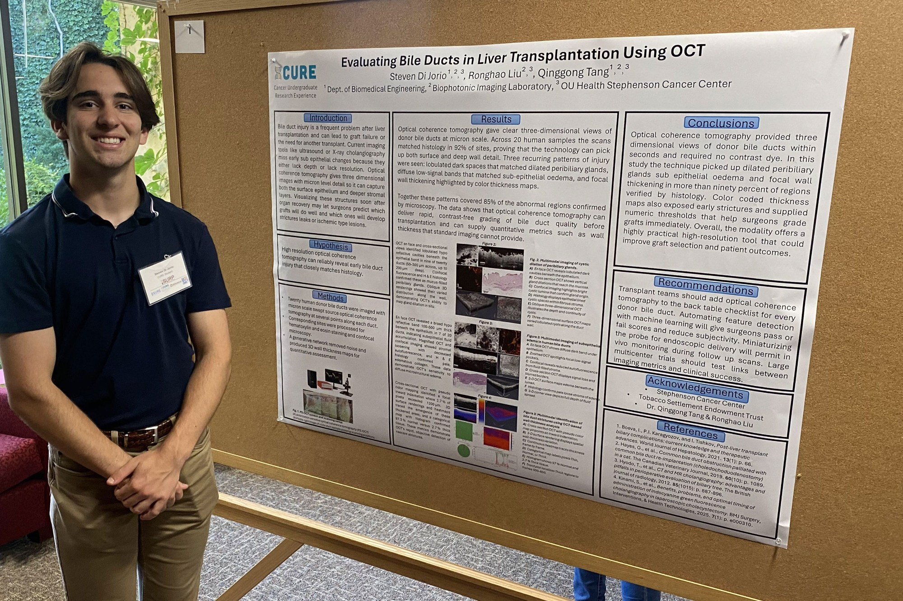

Biomedical Engineering · Research · Medicine
Steven Di Jorio
CURE Fellow at OUHSC Stephenson Cancer Center — specializing in photonics and AI for early cancer detection. Future Physicianeer.
Biomedical Engineering · Research · Medicine
CURE Fellow at OUHSC Stephenson Cancer Center — specializing in photonics and AI for early cancer detection. Future Physicianeer.
200+
Clinical Hours
4×
Dean's List
$15K
Microsoft Funding Secured
84%
Club Internship Placement
I am an undergraduate student at the University of Oklahoma, pursuing a B.S. in Biomedical Engineering with minors in Chemistry, Biology, and Math, on a Pre-Medical track (Expected Graduation: May 2027).
My goal is to become a "Physicianeer" — dedicating my career to early cancer detection through advanced photonic methods. This aspiration is rooted in my work as a CURE Fellow at the OUHSC Stephenson Cancer Center, where I apply Optical Coherence Tomography and AI to challenging diagnostic problems.
Beyond the lab, I co-founded the Prosthetics Club, established the "Askus coding pathways" non-profit, and volunteered 200+ hours in hospice care — reflecting a commitment to both technical innovation and compassionate community impact.
Photonics Research
OCT imaging for bile duct and cancer diagnostics
AI & Imaging
Deep learning models for tumor detection
Clinical Care
200+ hours hospice volunteering
Education
Founded free K-12 coding non-profit
Applying engineering principles and photonics to advance early cancer diagnostics.

A comprehensive literature review defining thresholds for cystic dilation of Beale's sacculi (peribiliary glands). Key findings: ectasia defined as <2 mm; peribiliary cysts ≥2 mm and up to 2.5 cm. Cysts are lined by benign biliary epithelium and linked to chronic liver disease and potential neoplastic precursors.
Explore Interactive ReviewPublication in preparation: Manuscript on photonics-based cancer diagnostics (2025).
Education, skills, and professional experience.
University of Oklahoma
Gallogly College of Engineering | Norman, OK
B.S. Biomedical Engineering
Expected May 2027 · Pre-Med Track
Minors
Chemistry · Biology · Mathematics
Awards
Dean's List (Fall '23, Spring '24, Fall '24, Spring '25) · President's Outstanding Programming Award '24–'25
Research
CURE Research Fellow
OUHSC Stephenson Cancer Center
Research
Neuro-Oncology Intern
University of Oklahoma
Industry
Behavioral Research Intern
Storylinez Inc. (OU Innovation Hub)
Leadership
Co-founder, Prosthetics Club
University of Oklahoma
Non-profit
Founder, Askus coding pathways
K-12 Programming Education
Clinical
Hospice Volunteer (200+ hrs)
Gospel of Life Disciples
Research tools, community programs, and entrepreneurial ventures.
Founder & Instructor
Founded an online coding non-profit empowering K-12 learners with accessible programming education. Secured $15,000 in match funding from Microsoft to sustain and scale the initiative.
Behavioral Research Intern · Storylinez Inc.
Developed a custom LLM to optimize AI-generated advertisements using psychographic research and real-time consumer behavior analysis. Served as ScrumMaster for executive presentations.
Co-founder & Executive Outreach Manager
Co-founded the Prosthetics Club; outreach efforts secured internships from local companies for ~84% of members seeking positions. Collaborated with veterans organizations and grew membership via social media.
Python · MATLAB · ImageJ
Python-based toolkit for processing and analyzing OCT images, including noise reduction filters, segmentation algorithms, and feature extraction for quantitative biomedical research analysis.
CURE Undergraduate Research Fellow
OUHSC Stephenson Cancer Center
Dean's List (Fall '23, Spring '24, Fall '24, Spring '25)
University of Oklahoma
President's Outstanding Programming Award '24–'25
University of Oklahoma
Runner-up, Norman Animal Welfare Volunteer of the Year
2025
Open to research collaborations, new projects, or opportunities in biomedical engineering and medicine.